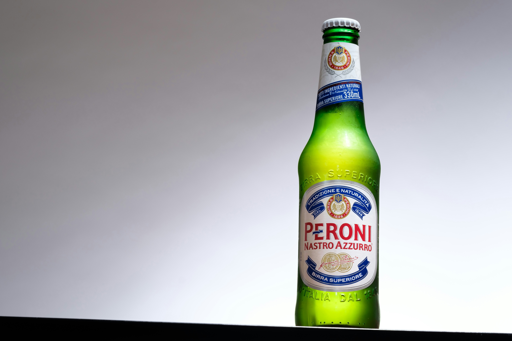
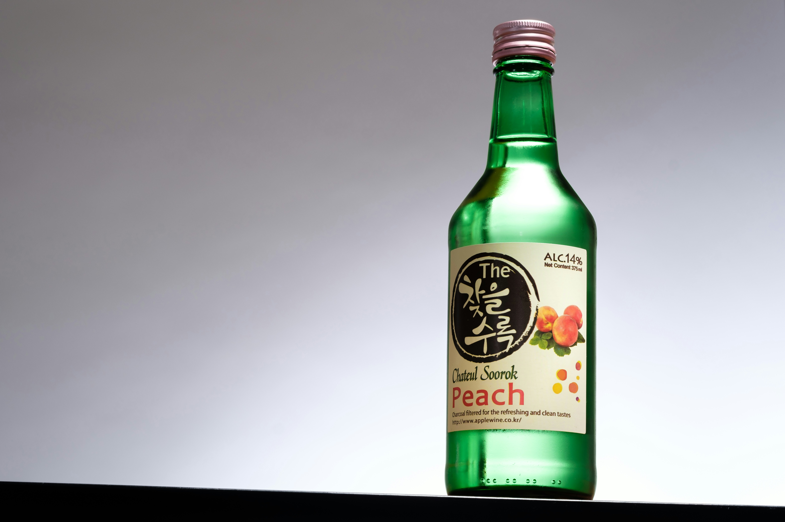
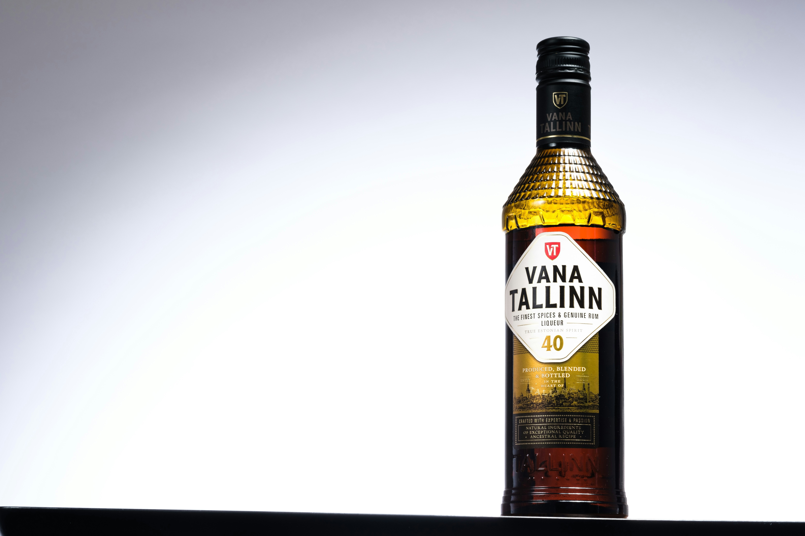

"Hi-Fi equips both casual home bartenders and professional mixologists alike with the ideal instruments for crafting delightful cocktails,
whether they adhere to traditional 1:1 ratios or experiment with innovative concoctions."

PRODUCT ONE
An impeccably balanced spirit that serves as the cornerstone of an exceptional cocktail. Ours is
meticulously concocted, blending cherry, fennel, elderflower, anise, and chamomile for a distinctive flavor profile.

CANALETTO
Vibrant, floral, and invigorating: our spirit begins with a medley of tropical hibiscus and zesty ginger,
complemented by spices and a subtle bitterness that gently persists in the background.

the NED
An intricate and delightful blend featuring tangy rhubarb, decadent cocoa,
fragrant vanilla bean, and the subtle essence of wild cherry bark.
COCKTAILS
Lo-Fi Aperitifs are a line of vermouths and amaro crafted with California wines and natural herbs flavors & botanicals.
Our goal was to create a liquid that can be enjoyed on its own, or used generously in a cocktail.